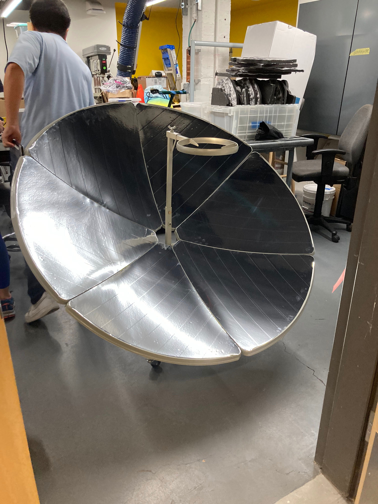
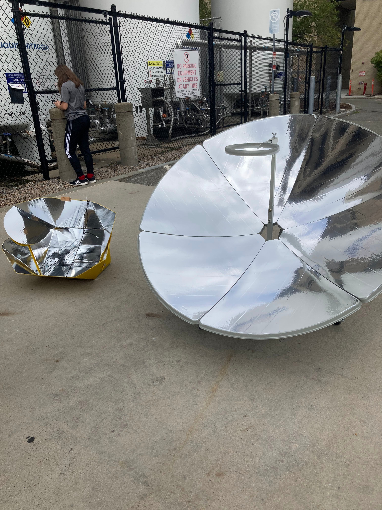

## Week 2:
### Monday
On Monday, my group finished assembling the last solar cooker (which I will refer to as
the large solar cooker). We also downloaded Arduino and started to look at how we could
use photodetectors and circuits to detect where the sun is located in the sky. Our entire
class also talked about how to set up websites some more and reviewed data from last
Wednesday.
Here is a picture of the solar cooker:

### Wednesday
On Wednesday, my group took out all three solar cookers outside to test them. I was in charge
of using the Flir (a thermal imaging camera) to get data. I noticed that Flir recalibrated
their color scale based off of the range of temperatures in the picture frame. This ment
there was no consistency when comparing pictures to one another. In addition, there was no
color scale that would indicate the temperature that a certain color would signify. I spent
most of the class session working on these issues. I eventually got a color scale to appear,
but all the temperatures were in degrees Fahrenheit not Celsius.
My process to get this far was:
1) Go to the Flir mobile app. Go to settings and make an account with FLIR. This should give
you access to the Flir Ignite cloud service.
2) Take a picture with the Flir Camera, while signed in. (To check: if you tap the gallery
symbol in the upper right corner, you should see your picture. If there is a lightning symbol
on it, it is on Flir Ignite.)
3) Go to the Flir Ignite website on a computer or a phone. Sign in. You should see the pictures
you took in a Folder called FLIR ONE.
4) Go to the menu on the upper right with your username on it. Click the settings option.
Scroll down to where it says Unit Options. Choose Celsius for the Temperature units menu.
Choose meters for the Distance units menu. (edit: this step found week 3 Monday)
5) Double click on the photo you want to add a color scale to. Press on the Edit button in the
upper right corner.
6) To get the color bar to appear, you can change literally anything. I would recommend changing
the filter to something else and back if you don’t want to change anything else. The color filter
button is the three rectangles at different angles (the 8th icon in the upper bar). You should also
be able to change the scale on the color bar so that all are consistent.
7) Press the Save and Exit button on the upper right. You should see the updated picture with a color
scale in degrees Celsius.
Some unedited pictures:


Here are some edited picures with a color scale:


Other outcomes: Unfortunately, testing the solar cookers did not work very well, since it was
very cloudy outside. The larger two solar cookers (the yellow folding one and the one that
looks like a satellite) did a little better than the pre-assembled one. We hypothesized that
this is because the pre-assembled one had much smaller mirrors and therefore had a harder
time gathering the little light that made it through the clouds.
